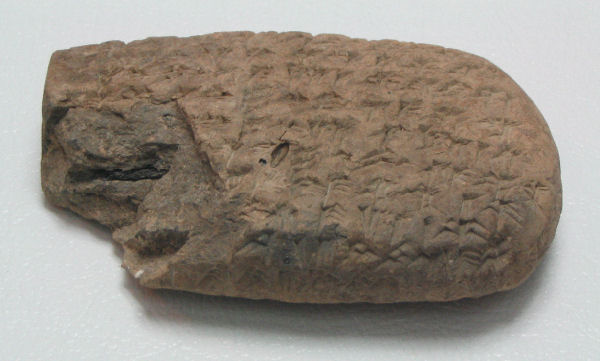
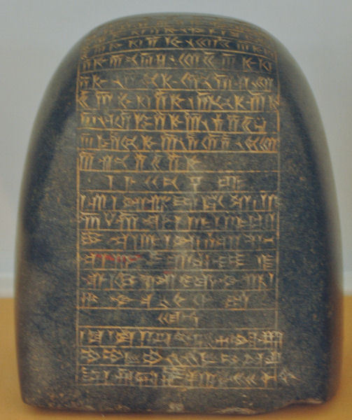
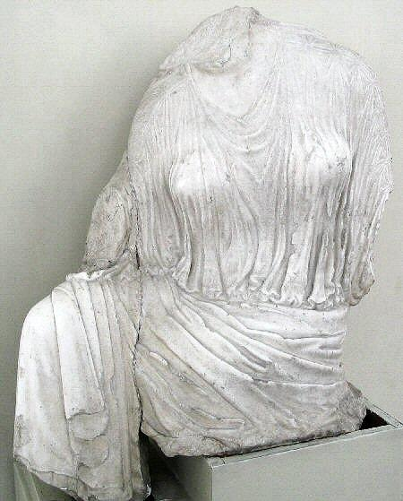

The Treasury was a symbol of the Achaemenid Power. The Treasury is where the kings stored all their treasure from invading countries and also all the gifts he received from his festivals. The Treasury was one of the largest buildings in Persepolis and over 1,300 people were employed there at once to keep everything spotless and glittering. The Treasury also served as the armory and was used as the King’s Court of Reception before that was built.
  